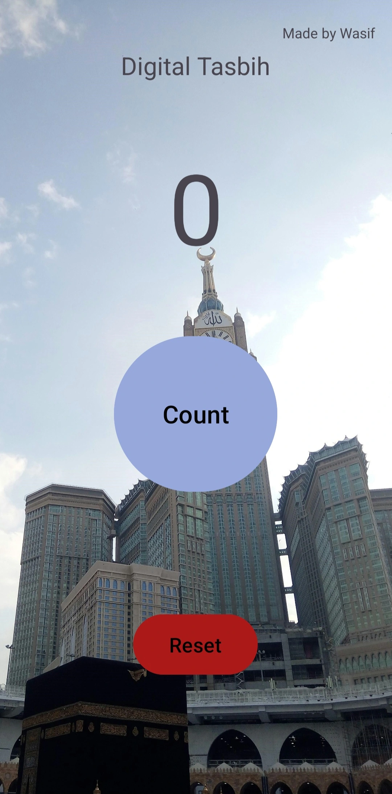
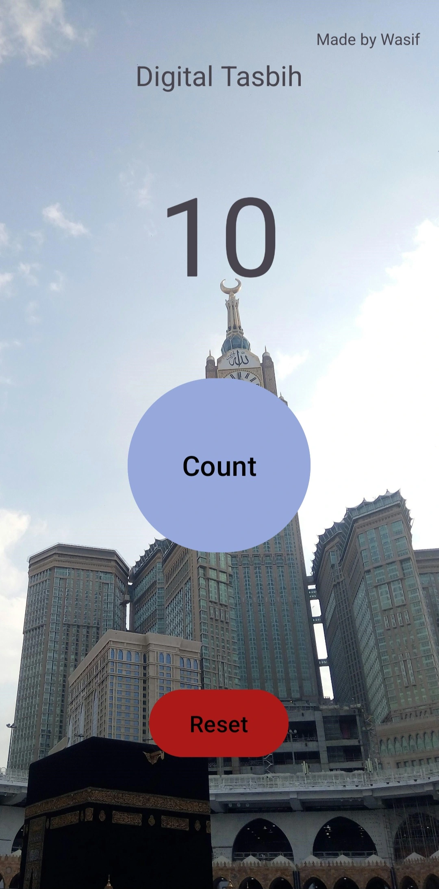

Back to Works

Digital Tasbih
Distraction-Free Daily Dhikr & Persistent Ibadat Counter
v1.1.0
100% Ad-Free
Android 8.0+
Download APK
16.0 MB • Signed & Safe
About Digital Tasbih
Digital Tasbih is a custom-built digital counter app designed to assist with daily dhikr. It features a simple, intuitive interface with a large "Count" button for tracking repetitions and a quick "Reset" option, beautifully overlaid on an inspiring background of Mecca.
Developed by Wasif, it serves as both a practical spiritual utility and a clean, functional showcase of mobile UI design.
App Screenshot

Zero Screen

Counting
Frameworks & Technologies
Native Android
Built with native Android SDK for instant response and zero frame drops.